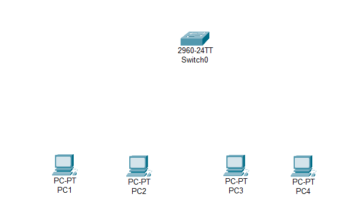
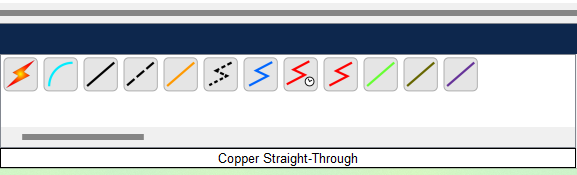
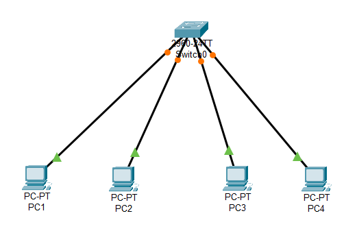
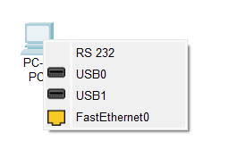
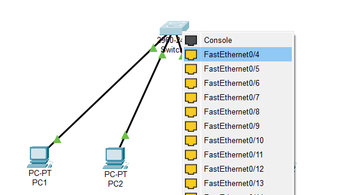

Practica 7
Laboratorio de Redes Digitales de Datos
Departamento de Ciencias e Ingenierías | Universidad Iberoamericana Puebla, México.

- Resumen -
En esta práctica, se explorará la implementación y el funcionamiento de redes de área local (LAN) utilizando tanto switches como routers. El objetivo principal es comprender las diferencias fundamentales en el funcionamiento de estos dispositivos y su aplicación en la creación de redes. Se construirán dos redes separadas, una utilizando un switch y otra utilizando un router, ambas conectando un mínimo de tres computadoras y un servidor web con asignación automática de direcciones IP. Se verificará la conectividad dentro de cada red mediante el comando "ping" y el acceso al servidor web. Finalmente, se unirán ambas redes para comprobar el intercambio de archivos entre los dispositivos conectados a diferentes segmentos de la red.
- Introducción -
Los switches y los routers son dispositivos esenciales en la infraestructura de redes, aunque cumplen funciones distintas. Un switch opera en la capa de enlace de datos (Capa 2 del modelo OSI) y se utiliza principalmente para conectar dispositivos dentro de la misma red o segmento de red, facilitando la comunicación a través de direcciones MAC. Por otro lado, un router opera en la capa de red (Capa 3 del modelo OSI) y es fundamental para interconectar diferentes redes o segmentos de red, tomando decisiones de enrutamiento basadas en direcciones IP.
- Materiales -
- 6 computadoras personales con tarjetas de red Ethernet y/o Wi-Fi.
- 1 Switch de red con suficientes puertos Ethernet.
- 1 Router inalámbrico con puertos Ethernet.
- Cables de red directos (RJ-45).
- Un servidor (una de las 6 computadoras configurada con un servidor
web, por ejemplo, utilizando XAMPP como en la práctica anterior).
- Desarrollo -
1. Identificación y Caracterización de Switch y Router:
- Investigar y documentar las principales funciones y
características de un switch (operación en Capa 2, tabla de
direcciones MAC, reenvío por MAC, dominio de broadcast).
- Investigar y documentar las principales funciones y
características de un router (operación en Capa 3, tabla de
enrutamiento, reenvío por IP, interconexión de redes, NAT/DHCP).
2. Elaboración de Red con Switchl:
-Conectar el switch a la fuente de alimentación.
- Conectar un mínimo de tres computadoras al switch utilizando
cables de red directos.
- Conectar la computadora configurada como servidor web al mismo
switch con un cable de red directo.
- Configurar todas las computadoras (incluyendo el servidor) para
obtener direcciones IP automáticamente (DHCP).
3. Comprobación:
- Utilizar el comando "ping" desde una computadora hacia la
dirección IP de otra computadora en la misma red para verificar la
conectividad.
- Abrir un navegador web en una de las computadoras cliente e
intentar acceder a la página web del servidor utilizando su
dirección IP.
4. Elaboración de Red con Router:
- Conectar el router a la fuente de alimentación y a una de las
computadoras mediante un cable de red directo para su configuración
inicial (si es necesario).
- Configurar el router para habilitar el servidor DHCP (asignación
automática de IP).
- Conectar un mínimo de dos computadoras al router mediante cables
de red directos (conexión cableada).
- Conectar una computadora al router mediante conexión inalámbrica
(Wi-Fi), ingresando la contraseña de la red Wi-Fi del router.
- Conectar la computadora configurada como servidor web al router
mediante un cable de red directo o inalámbricamente.
- Configurar todas las computadoras (incluyendo el servidor) para
obtener direcciones IP automáticamente (DHCP).
5. Comprobación:
- Utilizar el comando "ping" desde una computadora (cableada o
inalámbrica) hacia la dirección IP de otra computadora en la misma
red para verificar la conectividad.
- Abrir un navegador web en una de las computadoras cliente e
intentar acceder a la página web del servidor utilizando su
dirección IP.
6. Unión de Ambas Redes:
- Conectar el switch a uno de los puertos LAN del router utilizando
un cable de red directo.
- Asegurarse de que ambas redes sigan utilizando la asignación
automática de IP (DHCP del router debería ser suficiente para los
dispositivos conectados al switch a través del router).
- Desde una computadora conectada al switch, intentar acceder a un
recurso compartido (por ejemplo, una carpeta compartida) en una
computadora conectada directamente al router (o viceversa). Esto
puede requerir la configuración de recursos compartidos en los
sistemas operativos de las computadoras.
7. Comprobación:
- Verificar la conectividad entre dispositivos de ambas redes
utilizando el comando `ping` (desde una computadora en la red del
switch hacia una en la red del router, y viceversa).
- Documentar si el intercambio de archivos entre las redes fue
exitoso y los pasos necesarios para lograrlo.
Simulación
Esta práctica se centra principalmente en la implementación física de redes. Sin embargo, se podría utilizar un software de simulación de redes como Cisco Packet Tracer para modelar y probar conceptualmente las configuraciones antes de la implementación real.
Diseño
El diseño de la práctica consta de dos redes LAN separadas: una con un switch conectando computadoras y un servidor, y otra con un router conectando dispositivos cableados e inalámbricos, también con un servidor. Finalmente, se unen ambas redes conectando el switch a un puerto LAN del router.
Construcción
La construcción implica la conexión física de los dispositivos (computadoras, switch, router) mediante cables de red. También incluye la configuración lógica de las direcciones IP (DHCP) y la verificación de la conectividad mediante comandos y acceso a servicios.
- Resultados -
Los resultados obtenidos permitirán observar el funcionamiento de
las redes implementadas con switches y routers, así como la
interconexión de ambas. Se registrarán los siguientes
comportamientos:
- Identificación de las funciones clave del switch y el router.
- Conectividad (éxito o fallo del "ping") entre las computadoras en
la red del switch.
- Acceso (éxito o fallo) al servidor web desde las computadoras en
la red del switch.
- Conectividad (éxito o fallo del "ping") entre las computadoras
(cableadas e inalámbricas) en la red del router.
- Acceso (éxito o fallo) al servidor web desde las computadoras en
la red del router.
- Conectividad (éxito o fallo del "ping") entre computadoras de
ambas redes después de la unión.
- Éxito o fallo en el intercambio de archivos entre computadoras de
ambas redes y los pasos realizados.
Panel de control






- Conclusiones -
Con esta práctica, se ha logrado comprender la diferencia operativa entre un switch y un router en la creación de redes LAN. Se verificó cómo un switch facilita la comunicación dentro de un mismo segmento de red basado en direcciones MAC, mientras que un router permite la interconexión de diferentes redes y gestiona el tráfico basado en direcciones IP. La unión de ambas redes demostró la capacidad de un router para interconectar segmentos de red y permitir la comunicación entre dispositivos en diferentes dominios de red. Este conocimiento es fundamental para el diseño e implementación de redes más complejas.
- Referencias -
Apache Friends. (s.f.). XAMPP. Recuperado de https://www.apachefriends.org/es/index.html
Transmisión de datos y redes de comunicaciones (4a ed.). McGraw-Hill.
Gokhale, P., Bhat, O., & Bhat, S. (2018). Introduction to IOT. International Advanced Research Journal in Science, Engineering and Technology, 5(1), 41-44.
- Descargables -
Descargar documento PDF: documento.pdf
Descargar codigo Arduino: codigo.ino
Descargar Archivo 3d .STL: pieza.stl